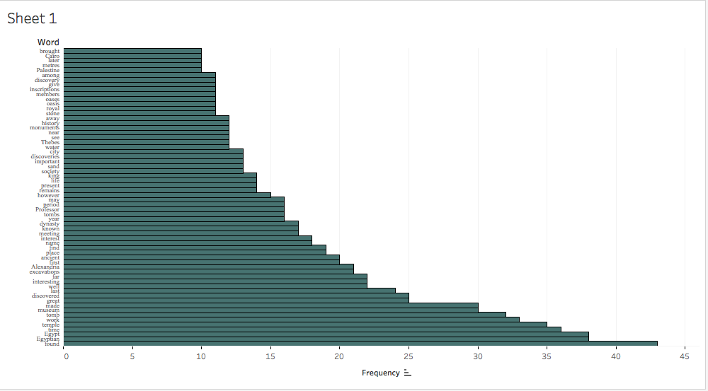

For my analysis project I am looking at the various ways in which articles relating to archaeology were contextualized within the Egyptian Gazette between 1905 and 1906. As an archaeology major, I am interested how the writers of the Egyptian Gazette approached the subject of archaeology. I’m curious to see how the field was treated, and whether it was a respectable pursuit or whether ancient ruins were considered simply to be sources for obtaining collectibles that could be sold. I drafted a variety of queries but after refining my research question to focus more on the content, I found the most success in using the query //div[@type="item"][contains(.,'KEY WORD')]. This search looked through the digital gazette pages for articles with content that included my key terms. To increase my chances of amassing a more well-rounded set of data, I used a series of key search terms. Since I was looking for articles concerning archaeology, I searched for related terms such as “excavation”, “museum”, “tomb”, and “discovery”. There are a multitude of other search terms that I could have included to further expand the results of my project, however time constraints led me to narrow my exploration to these terms.
I did encounter several issues during this first step of the research process. A significant number of articles relating to archaeology were not showing up in my results due to simple spelling errors. It appears that my classmates and previous microhistory students were fairly uninvolved with the text after running their scanned images through the OCR reader. This left the articles with an abundance of errors which made them incredibly difficult to read, and in some cases impossible to decipher. For many articles I was left with no choice other than to seek out the original image of the deliverables so that I could determine how it fit into my collection of articles. After reviewing the original source scans of several articles, I found that the word “archaeology” in itself was among the most butchered terms. In order to expand my search to include articles with even incorrect variants of “archaeology”, I used the ‘find in files’ function through Oxygen. I searched for “archaeo.+”, which effectively produced 43 results of the front end of my topic word, and completed with any variation of endings. Many of the resulting articles were simply never spell-checked, and still others were in French. For the purpose of my studies, I did not include the French language results, as I do not yet have the ability to confidently comprehend any language other than English.
Once I had a large pool of data, I skimmed through each article to ensure that its content pertained to archaeology. Several results from the excavation and discovery searches were unrelated, focusing rather on topics of planned construction in undeveloped areas or the oddly recurrent discovery of a body after the individual went missing. As interesting as some of these results were, they were not relevant enough to my research and so I excluded these from my final data set. As I read through my articles, I made brief notes for each text. Upon comparing my notes from all of the data, I noticed several recurring themes. As I had expected, a vast majority of the results featured an academic perspective, where the content largely commented on recent discoveries or new research being conducted in the field. There was also a noticeable amount of articles that mourned the active vandalism and passive deterioration of the ruins. Within this set of data I found another common thread of issues pertaining to funding of archaeological excavations and overall upkeep of various archaic monuments. Another cluster of articles touched on the touristic aspect of Egyptian archaeological sites, whereas the academic articles focused much more on the geographical and historical situation of the ancient remains. As it may be expected, there were also articles whose content incorporated more than one defining characteristic, whether they combined the academic perspective with the neglect of ruins or touristic tendencies, or combined the maltreatment of archaeological discoveries in regards to tourism in itself.
Of my constructed database, 46.6% of the articles were predominantly academically inclined. These texts focused on heralding newly excavated discoveries, from lost temples to fine marble portraits, as well as updating the gazette readers on the progress of ongoing excavations and research. In an issue from September of 1905, the readers are informed of recently concluded excavations of the area surrounding Hierakonopolis. The site dated to around 3,000 BCE and had been previously excavated, so archaeologists focused on the surrounding area in hopes of finding outlying establishments separate from the city’s center. A series of exquisitely preserved alabaster and granite vases were uncovered near a collection of dulled flint knives. This discovery led the field directors to consider expanding their dig units in hopes of revealing an unexpected urbanized area. Within the first two months of the dig season, over two thirds of a fortress was uncovered and found to have contained a fully preserved necropolis, complete with two large burial mounds. Remnants of animal sacrifices and an apis stone carving dated the burials to between the 3rd and 1st centuries BCE. Another article, from May of the same year, is presented in the form of a report from Professor Petrie, a leading Egyptologist. The professor enthusiastically records the various findings from a newly found cave that was considered sacred to the Egyptian goddess Sekhmet and doubled as a tomb of the XII dynasty. Petrie extensively described the architectural layout and decoration of the holy cave and all of its precious artifacts. He specifically records that approximately 50 artifacts, inscriptions and sculptures, were removed for a museum exhibition. These items were chosen less for their intrinsic value, but for their smaller sizes. The archaeological site was quite far from modern civilization, so each thing that was removed from the site had to be small enough to be transported via camelback.
17.7% of the articles focused both on academic and neglected materials. A most striking article from January of 1905 discussed the vandalism of the ancient area of Canopus. The author generated a most distressing mood as he wrote on his experiences at Aboukir. The man had visited the site in 1904 and had become enraptured by the bright mosaics preserved from the Ptolemaic age, over 2,000 years earlier. He reminisced on the catacombs which had been so well-maintained, then began to relate his most recent experience at the same site. Only ten months after his first enchanting visit to the site, he returned to a devastating scene. The mosaic pavements which had been so vibrant previously were now irreparably damaged as a result of being left exposed to the elements. There was no trace of any catacombs ever having been in the vicinity, and a large sector of the site had been blatantly abused as a stone quarry. The writer’s inquiry revealed that several museum authorities and all of the Alexandrian Archaeological Society had been informed of the site’s need for protection and preservation, but “as is usually the case in Egypt, the official authorities did absolutely nothing.” The man continues, “It is absurd… What can be thought of an archaeological society that has never moved a finger to excavate or protect the unique remains at an ancient site?” The author’s scathing words illuminate the possibility of such organizations like the Alexandrian Archaeological Society serving less of a directly academic purpose, and as acting more like an elite group of collectors of fine artifacts. Other evidence within the Gazette reveals that the AAS did host academic lectures and encourage research, but any other archaeological activity seems to have been limited to visiting various excavation sites to admire the ancient architecture or to appraise an assortment of artifacts.
13.3% of the data focused on the misappropriation of archaeological resources. An article from December of 1906 reports an important discovery of a magnificent temple at Thebes. The tomb is attributed to Meneptah, the pharaoh considered synonymous with that of the Exodus. This discovery was critical for historians and would have quite possibly revealed a great number of things, but when it was discovered, all that was left of the tomb’s original luxuries were the paintings spanning the very walls. No antiquities remained with the body, but evidence of previous forced entry into the tomb leads us to the only logical reasoning; the tomb had been plundered. Time and time again, the articles told the same sad tale of the discovery of already-looted tombs. The act of grave-robbing has been a prevalent issue since the times of the pharaohs. To capture the sorrowful reality of plundered sites, an anonymous writer submitted an elaborate poem to the Egyptian Gazette. The poem focuses on the lonely arm of Queen Zer, which was broken apart from its body when a careless robber broke into the Egyptian Queen Zer’s burial chamber. The poem winds on, commending various contemporary archaeologists for their dedicated work towards the tender excavation and cautious preservation of artifacts and monuments. Other articles joined the touristic with the theme of neglect, which composed another 11.1% of the data. An article from the Spring of 1905 invites tourists to join professional archaeologists in uncovering the renowned Sphinx from quickly accumulating sand. The director of the Cairo Museum wanted to engage tourists and get them to take part in the work associated with the preservation of monuments, rather than allowing them to stand idly by as one of Egypt’s greatest monuments was reclaimed by the desert sands.
The smallest percentage of articles belonged to the purely touristic category, at a whopping 2.2%. Articles that fell within this label dealt mostly with the functions of museums. There were multiple brief articles that served to inform the public of the extended museum hours and lowered admission prices for the summer season. While one discussed an alteration in the visitation hours for Pompey’s Pillar, another celebrated the British Museum’s decision to re-arrange their Egyptian department to create an entirely fresh exhibit. A slightly more substantial group of 8.8% of the articles balanced both academic and touristic subjects. An article from October 1905 highlighted Hamdi Bey, an “enlightened Turkish gentleman” who enthusiastically pursued archaeology in research and excavations. The man gathered all the artifacts he discovered and created an entirely new museum dedicated entirely to a collection of sarcophagi that ranged in dates from the 6th century BCE to the Byzantine empire around 140 CE. Hamdi Bey’s collection of unbroken sarcophagi were not only valuable but also provided a substantial amount of information on the funerary rituals of the Phoenicians, who were notorious for having no surviving art as evidence into their daily lives.
To assimilate all of this into a serial question, I chose to find out which words were most commonly associated with these archaeologically inclined articles. After running the articles through my software, I ended up with a list of words and the number of times each was used across all my source articles. I formatted only the words that were repeated 10 times or more, for the sake of being concise. The field of archaeology appears to have been an admirable pursuit, considering the prevalence of the articles praising the new discoveries and their associated research. Although the archaeology of Alexandria and surrounding Egypt was commonly objectified and exploited, there appears to be a distinct awareness of this misappropriation of the historical resources among at least the authors of the articles that pepper the Egyptian Gazette. The enthusiastic and respectful tones in which these individuals addressed the archaeology suggest that there may have been an expansive sentiment of support for the preservation and continued study of the past. It seems likely that the survival of the archaeological remains of Ancient Egypt may have empowered the native Egyptians and confirmed their own cultural identity, which had been fairly overlooked in contemporary times. The British occupation of the early twentieth century overshadowed the days of Egyptian dynastic influence, but the reemergence of artifacts crafted at the country’s height of power reaffirmed the grandeur of the much celebrated Egypt of old.
